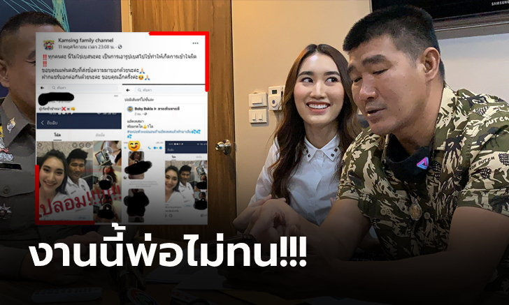
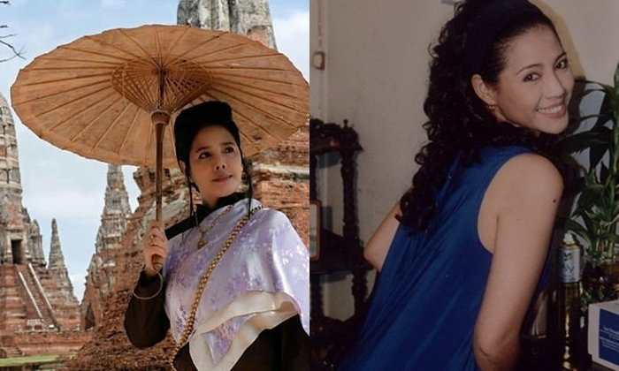
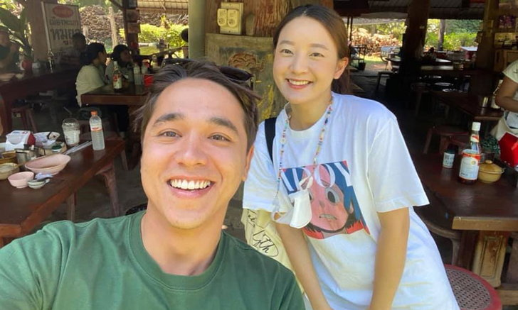
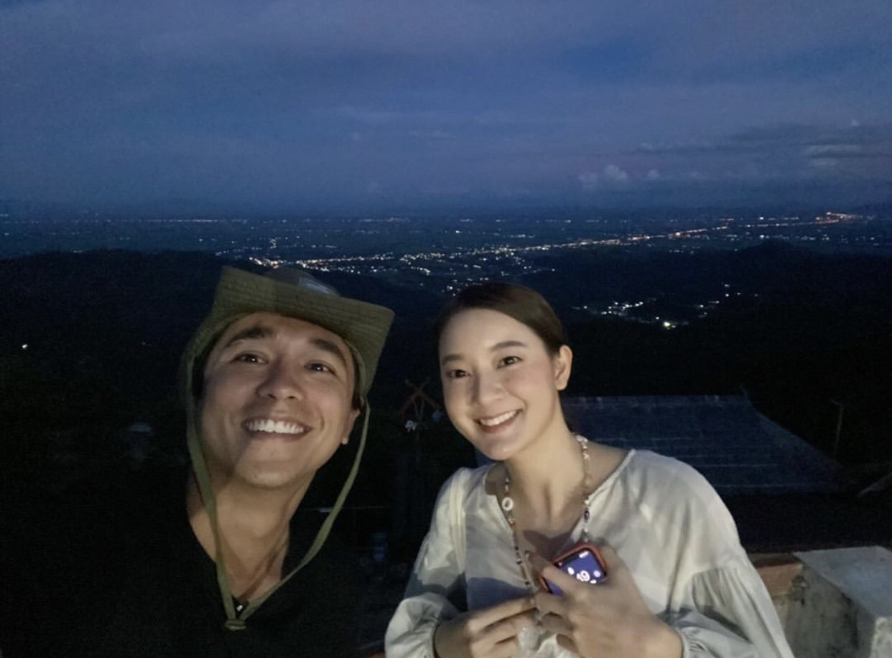
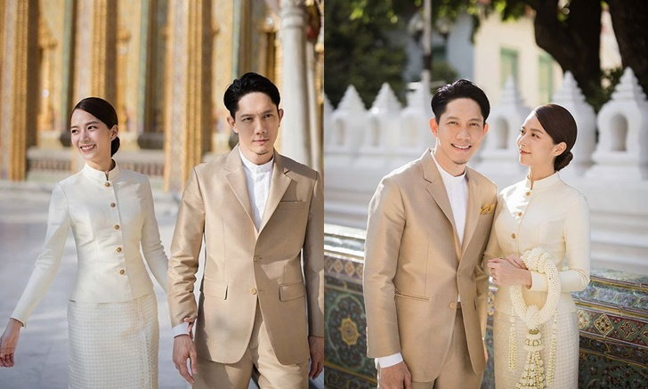

"สมรักษ์" เดือดพา "น้องเบสท์" ลูกสาวเข้าแจ้งความหลังโดนแอบอ้างคลิปหลุดนศ.
งานนี้ทำเอา "โม้อมตะ" สมรักษ์ คำสิงห์ นักมวยทีมชาติไทย ฮีโร่เจ้าของเหรียญทองโอลิมปิก 1996 ทนไม่ได้เดินทางไปพร้อมกับ "น้องเบสท์" รักษ์วนีย์ คำสิงห์ ลูกสาวคนสวย เข้าแจ้งความร้องทุกข์ที่กองบังคับการปราบปรามการกระทำความผิดเกี่ยวกับอาชญากรรมทางเทคโนโลยี (บก.ปอท.)
โดยเรื่องเกิดจากการที่มีผู้ไม่หวังดีปั่นกระแสนำรูปที่อดีตกำปั้นทีมชาติไทยเคยถ่ายกับลูกสาว ไปโพสต์ลงในเฟสบุ๊คพร้อมนำคลิปโป๊แนบไปด้วย โดยอ้างว่าเป็นคลิปของลูกสาวฮีโร่เหรียญทองโอลิมปิก พร้อมทั้งยังมีการเผยแพร่ในเว็บไซต์ลามกอนาจาร เพื่อให้คนเข้าใจผิดและหลงเชื่อ
ซึ่ง ยูทูปเบอร์สาววัย 20 ปี ได้ออกมายืนยันว่าไม่ใช่ตนแน่นอน พร้อมทั้งชี้แจงผ่านสื่อรวมถึงให้เจ้าหน้าที่ตำรวจช่วยดำเนินการเพราะทำให้ภาพลักษณ์เสื่อมเสีย และกระทบต่อหน้าที่การงาน เนื่องจากมีคนส่งข้อความเข้ามาต่อว่าเพราะเข้าใจผิดว่าเป็นตนจริงๆ
พร้อมกันนี้ได้รวบรวมหลักฐานเข้าแจ้งความต่อ พ.ต.อ.ศิริวัฒน์ ดีพอ รอง ผบก.ปอท. ในฐานะรองโฆษกสำนักงานตำรวจแห่งชาติ ( ตร.) และร.ต.อ.ฐานันดร สาสูงเนิน รอง สว.(สอบสวน) กก.3 บก.ปอท. เพื่อดำเนินคดีกับผู้ไม่หวังดีที่แชร์ภาพคลิปวิดีโอดังกล่าวเพื่อให้คนเข้าใจผิด และหลงเชื่อ
ซึ่งทางเจ้าหน้าที่ตำรวจเผยว่า คดีนี้เป็นความผิดฐานหมิ่นประมาท และความผิดตามพ.ร.บ.คอมพิวเตอร์ ซึ่งมีอัตราโทษปรับ 1 แสนบาท หรือจำคุกไม่เกิน 5 ปี หรือทั้งจำทั้งปรับ ซึ่งจะเร่งติดตามตัวคนโพสต์ และแชร์มาสอบปากคำว่าต้นตอภาพกับคลิปดังกล่าวมีที่มาอย่างไร พร้อมทั้งจะประสานกระทรวงเศรษฐกิจและดิจิตัลเพื่อสังคม (ดีอีเอส) สั่งปิดกั้นการเข้าถึงเว็บไซต์ดังกล่าวด้วยเช่นกัน
ย้อนดู คุณหญิงจำปา บุพเพสันนิวาส "เหมียว ชไมพร" สวยสะกดใจมาตั้งแต่สาวๆ
ติดพูด “ออเจ้า” กันทั้งบ้านทั้งเมืองเลยทีเดียว สำหรับกระแสละครดัง "บุพเพสันนิวาส" ซึ่งหนึ่งในตัวละครสำคัญของเรื่องอย่างคุณหญิงจำปา แม่ของพ่อเดช หรือ หมื่นสุนทรเทวา แสดงโดยหนุ่ม "โป๊ป ธนวรรธน์" นั้น ก็เป็นที่พูดถึงไม่แพ้กัน เพราะถึงแม้จะเป็นคนดุ แต่คุณหญิงป้าแต่ก็ให้ความยุติธรรมและดูเอ็นดูแม่การะเกด ซึ่งแสดงโดยนางเอกสาว "เบลล่า ราณี" อยู่ไม่น้อย
งานนี้ ในโลกออนไลน์ได้มีการแชร์ภาพสมัยสาวๆ ของคุณหญิงจำปา ซึ่งแสดงโดย เหมียว ชไมพร จตุรภุช นักแสดงรุ่นใหญ่วัย 54 ปี โดยต่างพากันชื่นชมว่าความสวยของคุณหญิงป้า สวยความสะกดใจมาตั้งแต่สมัยสาวๆ ที่แท้จริง

สำหรับ เหมียว ชไมพร จตุรภุช เริ่มต้นเข้าสู่วงการด้วยการเข้าประกวดนางสาวไทย เมื่อปี พ.ศ. 2527 จากนั้นจึงได้เข้าสู่วงการแสดงโดยเริ่มจากละครจักรๆ วงศ์ๆ ทางช่อง 7 เรื่อง เทพสามฤดู และเริ่มเข้าสู่วงการบันเทิงในสายนักแสดงอย่างเต็มตัว และรับบทได้หลากหลายทั้ง นางเอก นางรอง และนางร้าย
แต่เนื่องจากมีสายตาดุเด่นออกไปทางร้ายลึก จึงมักได้บทร้ายมากกว่า เช่น บท "พิตะวัน" ในละครเรื่อง มายา (ช่อง 7), "ศันสนีย์" จากเรื่อง จำเลยรัก (ช่อง 7), "คุณยายวรนาฏ" จากเรื่อง ทายาทอสูร (ช่อง 5) ฯลฯ แต่ยังเล่นบทน่าสงสารได้ดี เช่น บท "น้อย" ในละครเรื่อง คมพยาบาท ทางช่อง 5, บท "ปัทมา" จากเรื่อง ขมิ้นกับปูน ทางช่อง 7, บท "โอบบุญ" จากเรื่อง กำแพงบุญ ฯลฯ
สำหรับชีวิตส่วนตัว ปัจจุบัน ชไมพร ยังมีสถานภาพโสด ได้ผันตัวทำงานเบื้องหลังเป็นผู้บริหาร บริษัท เนเวอร์แลนด์ ครีเอชั่น จำกัด และ บริษัท แชนนอล ซี จำกัด เพื่อผลิตรายการสารคดี และยังรับงานละครโทรทัศน์บ้างเป็นช่วงๆ
"อเล็กซ์" โพสต์ภาพคู่ "อิ้งค์ วรันธร" บอกบังเอิญเจอ คอมเมนต์ฮาแอบลั่นไม่เนียนเลย
อเล็กซ์ เรนเดลล์ โพสต์ภาพคู่กับนักร้องสาว อิ้งค์ วรันธร บอกขำๆ สาบานว่าบังเอิญเจอจริงๆ หลายคนแอบไม่เชื่อนะเนี่ย
ตกเป็นคู่จิ้นคู่ใหม่ของวงการบันเทิงระหว่างพระเอกหล่อทั้งกายและหัวใจ อเล็กซ์ เรนเดลล์ กับนักร้องสาว อิ้งค์ วรันธร ที่ก่อนหน้านี้ทั้งคู่ได้โคจรมาร่วมทำกิจกรรมเพื่อสิ่งแวดล้อมด้วยกันพร้อมๆ กับเคมีที่เข้ากัน จนทำให้เกิดกระแสจิ้นแรงเชียร์จากแฟนคลับกันยกใหญ่ พร้อมๆ แรงต้านจากหนุ่มๆ ที่แอบหวง อิ้งค์ วรันธร ไม่อยากให้หัวใจถูกใครจับจอง
และภาพล่าสุดทีฮือฮาเมื่อ อเล็กซ์ โพสต์ภาพคู่กับ อิ้งค์ วรันธร ลงในเฟซบุ๊ค Alex Rendell พร้อมกับแคปชั่นที่ว่า "สาบานว่าบังเอิญเจอ .... ที่ร้านก๋วยเตี๋ยวพะเยา what are the chances! Good to see you Ink" ซึ่งหลังจากที่ภาพดังกล่าวถูกโพสต์ไปนั้น กระแส #ทวงคืนอิ้งค์ ตามมาติดๆ เลยทีเดียว
โดยแฟนคลับของ อิ้งค์ แต่ละคนที่ได้เข้ามาคอมเมนต์นั้นหลายคนแอบไม่เชื่อว่าเป็นเรื่องบังเอิญนะจ๊ะ บางคนก็บอกว่า อเล็กซ์ ไม่เนียนเลยจริงๆ บอกเลยว่าคอมเมนต์ของแต่ละคนนั้นฮาหนักมากจริงๆ
“ปั๊บ-ใบเตย” เผยภาพเข้ารับประทานน้ำพระพุทธมนต์ เป็นสิริมงคลชีวิตคู่
ใกล้เข้ามาแล้ว สำหรับวันงานแต่งงานของคู่รักสุดน่ารักอย่าง ปั๊บ โปเตโต้ กับแฟนสาว ใบเตย สุวพิชญ์ ที่จะมีขึ้นในวันที่ 15 พ.ย.นี้ ซึ่งก่อนหน้านี้ ปั๊บ-ใบเตย ก็ได้เผยให้เห็นภาพพรีเวดดิ้งสุดน่ารักไปแล้ว
และล่าสุดปั๊บได้เผยภาพอันสวยงาม ที่ทั้งคู่และครอบครัว ได้ควงกันไปกราบขอพร และเข้ารับประทานน้ำพระพุทธมนต์ จากสมเด็จพระสังฆราช สกลมหาสังฆปริณายก เพื่อเป็นสิริมงคลในการดำเนินชีวิตคู่ต่อไป โดยปั๊บได้โพสต์ภาพพร้อมกับเขียนบรรยายไว้ด้วยว่า
"ใกล้วันสำคัญเข้าไปทุกที...
เมื่อวันก่อนผม เตย และครอบครัวมีโอกาสได้เข้าไปกราบขอพร และรับประทานน้ำพระพุทธมนต์ จากสมเด็จพระสังฆราช สกลมหาสังฆปริณายก และได้ถวายเครื่องสังฆทานแก่พระภิกษุสงฆ์ ณ วัดราชบพิธสถิตมหาสีมารามราชวรวิหาร
เพื่อเป็นศิริมงคลในการดำเนินชีวิตคู่ต่อไป ซึ่งเป็นอีกโอกาสที่พิเศษมากในชีวิตสำหรับผมเหลือเกินครับ
ผมต้องขอขอบพระคุณพี่ธาม @thamsrinopnikom สำหรับแม่งานในครั้งนี้นะครับ ขอบคุณครูปาน @parnarts พี่แป้ง @pang_nidcha ที่คอยสนับสนุนคอยมอบความรักให้ผมกับเตยเสมอ ขอบคุณพี่จ๋อม @jomtheatre สำหรับชุดผ้าไหมสุดสวยในครั้งนี้ด้วยนะครับ และดอกไม้พวงมาลัยสวยๆจากพี่เอี๋ยว ขอบคุณในน้ำใจไมตรีที่พี่ๆทุกท่านมอบให้จริงๆครับ
ภาพโดย @bluezuriphoto
#toeipupwedding #parnarts #jomtheatre #zuvapitsnap"